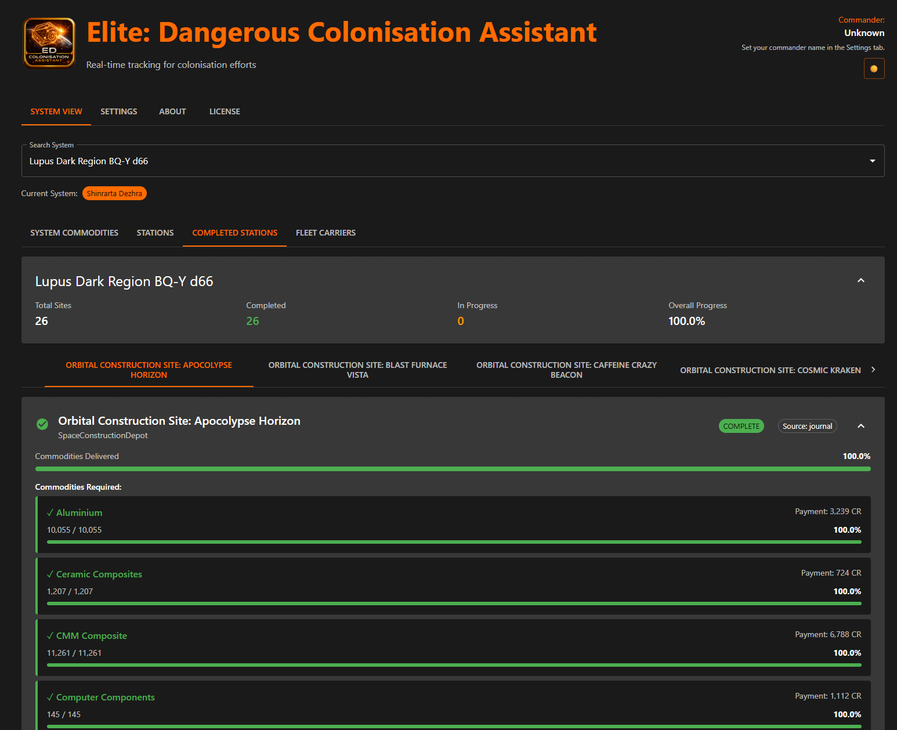

A construction site wants thousands of tonnes across dozens of commodities, and a system usually has more than one site wanting overlapping things. EDCA adds them up so you can read one list instead of doing the arithmetic in your head.
Every commodity still needed across all construction sites in a system, aggregated into one list with progress, average payment and which sites want it. It goes green on full delivery.
Each construction site on its own, with what it has taken so far and what it is still short of, so you can fill one before moving on.
Finished sites kept separately, so the list you are working from holds only what still needs hauling.
Per-system station state, your visits and base landings, tracked from local data as you explore and build out a colony.

A system built out: 26 sites, all complete, with every commodity accounted for and the payment each earned.
The other half of hauling: what the carrier holds, what it runs on and where it is going.
Continue